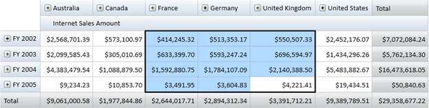

OlapGrid for WPF supports excel like cell selection where you can select grid value cells as like in MS-Excel. On cell selection, an event called OlapGridSelectionChanged will be triggered and the OlapGridSelectionChangedEventArgs will return an IEnumerable collection of column, row and value of the corresponding selected cell. The EventArgs will also return the cell range and the selection reason like mousedown, mousemove, mouseup etc.
Use Case Scenarios
Using Cell Selection, you can select cells that can be copied to clipboard or notepad. You can perform custom operation on cell selection and also can bind any control based on the selected cell values.
Adding Cell Selection
The following code snippets show how to create an OlapGrid and specify its cell selection.
|
[XAML] <!--Adding OlapGrid and Enabling Cell Selection--> < syncfusion : OlapGrid AllowSelection ="True"> </ syncfusion : OlapGrid>
|
|
[C#] OlapGrid OlapGrid1 = newOlapGrid(); // Instantiating OlapDataManager. OlapDataManager olapDataManager = newOlapDataManager(); // Set current report for OlapDataManager. olapDataManager.SetCurrentReport(olapReport()); // Specifying OlapDataManager to Grid. this.OlapGrid1.OlapDataManager = OlapDataManager; // Enable Cell Selection. this.OlapGrid1.AllowSelection = true; // Data binding. this.OlapGrid1.DataBind();
|
|
[VB]
Dim OlapGrid1 As OlapGrid = New OlapGrid() ' Instantiating OlapDataManager. Dim olapDataManager As OlapDataManager = New OlapDataManager() ' Set current report for OlapDataManager. olapDataManager.SetCurrentReport(olapReport()) ' Specifying OlapDataManager to Grid. Me.OlapGrid1.OlapDataManager = OlapDataManager ' Enable Cell Selection. Me.OlapGrid1.AllowSelection = True ' Data binding. Me.OlapGrid1.DataBind()
|
The screen shot below illustrates the Cell Selection.

Figure 36: OlapGrid Cell Selection
Sample Link
A sample application that illustrates Cell Selection Chart is distributed along with the Essential OLAP Grid WPF installation and can be found at:
..\..\ Syncfusion\BI\WPF\OlapGrid.WPF\Samples\Appearance\Cell Selection Demo